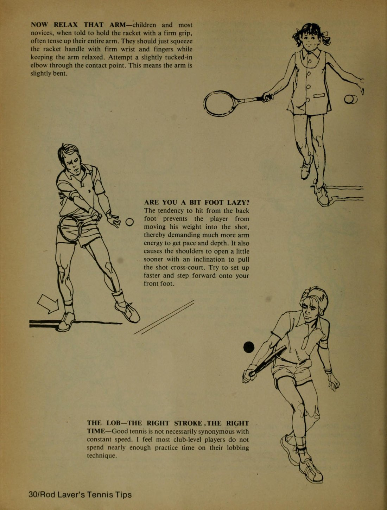
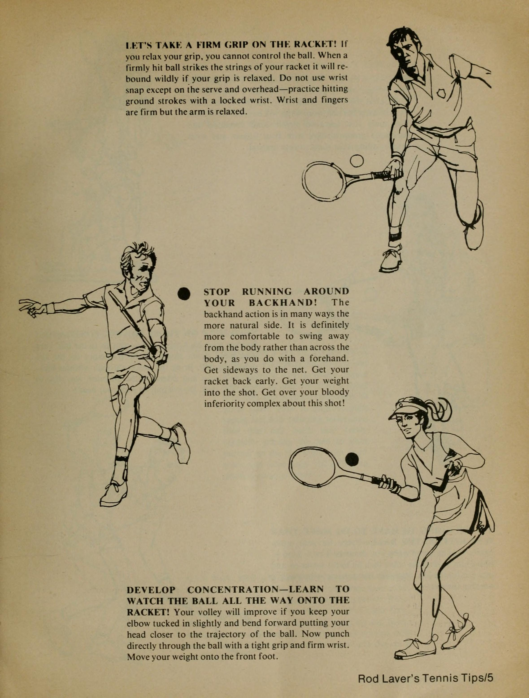

1. Hãy nắm vững vợt!
Nếu bạn thả lỏng tay cầm, bạn không thể kiểm soát bóng. Khi một quả bóng được đánh chắc chắn vào dây vợt của bạn, nó sẽ bị giật mạnh nếu tay cầm của bạn được thả lỏng. Không sử dụng đòn giật cổ tay ngoại trừ khi giao bóng và giao bóng trên cao — hãy tập đánh các cú đánh trên mặt đất bằng cổ tay bị khóa. Cổ tay và các ngón tay chắc chắn nhưng lại thả lỏng.
2. Dừng chạy vòng tay trái của bạn!
Động tác trái tay về nhiều mặt là mặt tự nhiên hơn. Chắc chắn sẽ thoải mái hơn khi vung vợt ra xa cơ thể hơn là vung ngang cơ thể, như bạn thực hiện với cú thuận tay. Đi ngang vào lưới. Hãy lấy lại vợt của bạn sớm. Dồn trọng lượng của bạn vào cú đánh. Hãy vượt qua mặc cảm tự ti của bạn về cú đánh này!
3. Phát triển tập trung— học cách xem bóng tất cả các cách trên vợt!
Cú vô lê của bạn sẽ cải thiện nếu bạn giữ khuỷu tay hơi khép vào và cúi người về phía trước để đầu bạn gần quỹ đạo của quả bóng hơn. Bây giờ hãy đấm thẳng vào quả bóng với tư thế cầm chặt và cổ tay chắc chắn. Chuyển trọng lượng của bạn lên bàn chân trước.
4. Hãy cẩn thận với các chụp cổ tay!
Tôi khuyên bạn nên tập đánh những cú chạm đất bằng cổ tay bị khóa. Hãy tập trung vào ý tưởng rằng một khi vợt của bạn bắt đầu hướng về phía trước để gặp bóng, cổ tay của bạn sẽ hoàn toàn chắc chắn! Trước tiên, bạn phải học cách thực hiện các cú chạm đất thuận tay và trái tay bằng ngón tay và cổ tay chắc chắn trước khi bổ sung thêm các cú đánh bằng cổ tay vào kho vũ khí của mình.
5. Cần giúp đỡ về những bài tay di chuyển?
Hãy rút ngắn động tác backswing của bạn và khi tiếp bóng, hãy giữ đầu của bạn hướng xuống gần quỹ đạo của quả bóng đang lao tới. Đưa vợt qua mà không búng nhẹ cổ tay của bạn và đưa vợt theo hướng bạn muốn hướng cú đánh. Đừng kéo lên bằng đầu của bạn!
6. Bạn sẽ phải làm nhiều hơn chỉ chỉ đánh bóng
Hãy thăm dò điểm yếu của đối thủ và khi bạn phát hiện ra điểm yếu đó. Di chuyển xung quanh sân sau đó đánh vào điểm yếu của anh ta và tiến vào để giết. Hãy duy trì mô hình này miễn là nó mang lại chiến thắng cho bạn.
7. Ok, gals, hãy chiến thắng lần tiếp theo với một số lob hit hit!
Đây là một vũ khí nguy hiểm, thậm chí đối với những người chơi bóng bẩy. Nó khiến họ không an toàn trên lưới và mắc lỗi—đánh bóng nhẹ nhàng nhưng bằng một cú đánh đầy đủ. Đi qua quả bóng với khuôn mặt mở. Giữ nó sâu!
8. Bạn không cần đến tòa để thực hành!
Hãy ra ngoài sân của bạn với một cầu thủ muốn tiến bộ. Tìm một khu vực khá bằng phẳng và đặt mình cách nhau 10 thước. Bây giờ để cải thiện cảm giác vợt và kỹ thuật chuyền bóng của bạn. Chơi bóng qua lại, cẩn thận đặt bóng cho đối tác của bạn trên tâm trí - động tác bằng chân và giữ chắc cổ tay để phát triển khả năng kiểm soát tốt!
9. Bạn có thể đạt được hiệu quả khi sao lưu không?
Với những cú lốp bóng sâu, bạn sẽ thường phải đánh trong khi lùi về phía sau và nhảy vào Bài tập, bước nhanh về phía sau bằng chân phải. Tiếp theo đẩy chân phải của bạn ra và nhảy lên và lùi lại, tiếp đất bằng chân trái khi bạn xoay người. Hành động đá kéo này sẽ cho phép bạn trở thành đối tác đánh đôi hiệu quả hơn nhiều.
10. Có thể bàn chân là vấn đề lớn của bạn?
Để phản ứng với một quả bóng đang chuyển động, điều cần thiết là phải nhanh chân. Những cầu thủ giỏi hơn không bao giờ bằng chân khi họ tiếp cận quả bóng. Nếu quả bóng nảy lên hoặc trượt vào bạn hoặc ra xa bạn, hãy nhanh nhẹn và di chuyển cơ thể mệt mỏi của bạn một cách nhanh chóng. Nó có thể tạo nên sự khác biệt!
11. Khi bạn tiếp cận mạng
Đừng đợi bóng qua lưới mới chuẩn bị cho cú vô lê! Đọc góc của quả bóng khi nó rời vợt đối phương và ngay lập tức bắt đầu di chuyển vợt của bạn vào vị trí để thực hiện cú vô lê.
12. Thử thực hành với một người bạn với tốc độ nửa nửa
Điều này không có nghĩa là sử dụng nửa cú đánh. Đánh bóng hoàn toàn nhưng làm chậm cú vung. Làm việc theo nhịp điệu và thời gian của cảnh quay. Cố gắng để có được bước chân hoàn hảo. Việc đánh sai thường có thể được khắc phục ở nhịp độ chậm hơn này. Theo dõi quỹ đạo của quả bóng và thiết lập cho phù hợp.
13. Hãy lên khuỷu tay đó lên!
Tôi là một trong những chi phí sử dụng vũ khí phụ tại các câu lạc bộ khác nhau mà tôi thường xuyên lui tới. Rất chính xác hoặc nhất quán. Hãy chú ý cách những người chơi giỏi hơn trong giải đấu giơ khuỷu tay lên khi họ đưa vợt lên từ phía sau.
14. Chắc chắn khi trở lại phục vụ hơn tốc độ!
Trong đánh đôi, cố gắng để người giao bóng phải đoán và do dự—một cú đánh nhẹ vào chân người giao bóng, một cú đánh qua đầu đồng đội của anh ta, một cú giao bóng chéo góc sắc nét sẽ khiến đội kia phải đoán. Thỉnh thoảng một vụ nổ xảy ra ngay trên lưới hoặc xuống con hẻm của anh ta sẽ giúp anh ta không bị săn trộm.
15. NẾU BẠN ĐANG Huấn luyện một TRẺ
bắt đầu giao bóng với cây vợt úp xuống lưng với tư thế gãi lưng. Bóng nên được giữ nhẹ trong đầu ngón tay. Thả bóng nhẹ nhàng, thẳng trước vai trái. Hãy chắc chắn rằng quả bóng bay đủ cao để có thể đánh nó với tư thế duỗi thẳng hoàn toàn!
16. Đừng đứng đó chờ đó!
Hãy cố gắng tiếp tục tiến về phía trước với tất cả những cú vô lê đó. Nó sẽ dồn trọng lượng của bạn vào cú đánh, ngăn bóng rơi quá thấp và nói chung là đe dọa đối thủ bằng cách thể hiện sự tự tin mạnh mẽ như vậy.
17. Giữa phía đông và lục địa,
bạn sẽ tìm thấy cái được gọi là kiểu cầm vợt kiểu Úc. Nó cho phép thực hiện nhiều cú đánh đa dạng nhất—bạn có thể lái nó, cắt nó, nó hoặc, với cùng một sự chuẩn bị, trong một cú đánh đẹp mắt với tay cầm này.
18. Đừng sợ đạt được!
Đôi khi một cú lao tốt sẽ phát huy tác dụng - hãy quyết tâm rằng bạn sẽ đưa bóng trở lại lưới bất kể bạn phải chạy nước rút và tiếp cận bao xa. Nếu đó là một cú giao bóng nhanh và rộng, hãy bằng lòng chỉ chặn bóng lại.
19. Hãy thử nghĩ về điều này trên bàn tay của bạn
—khi bóng tiến đến gần khu vực tấn công một feet, hãy đưa vai trước của bạn chỉ vào bóng. Nếu bạn quan sát những người chơi giỏi hơn, bạn sẽ nhận thấy rằng một mũi tên xuyên qua vai họ sẽ chỉ vào mục tiêu đang đến gần. Hãy thử nó!
20. Thôi cô gái, bạn phải lại!
Bất chấp tất cả sự chuẩn bị chu đáo mà bạn đã thực hiện cho các cú đánh của mình, sẽ có những lúc chỉ cần một nguồn năng lượng bùng nổ và một cú lao tới sẽ cứu được điểm. Điều hòa sau đó sẽ tạo ra sự khác biệt. Tốt hơn hết bạn nên dành chút thời gian để chạy bộ và tập thể dục mềm dẻo nếu muốn trở thành một người vận động tốt.
21. Đây là một mẹo
để giúp bạn nằm nghiêng và không mở vai quá sớm khiến bạn phải kéo bóng thay vì vuốt bóng. Đưa tay của bạn về phía trước theo hướng của lưới trong quá trình vung vợt về phía sau. Xoay vợt của bạn qua quả bóng kéo dài về phía trước cho đến khi tay cầm chạm tới tay kia.
22. Bạn muốn cải thiện tổng quát của bạn?
Một điều khá quan trọng đối với một cú đánh qua đầu tốt là phần bên trái của cơ thể bạn hướng vào lưới. Một cách khác là đảm bảo hai chân cách nhau một cách thoải mái. Không sử dụng nhiều động tác backswing. Hãy tưởng tượng quả bóng là một chiếc đinh ở điểm cao nhất mà bạn có thể chạm tới. Đập nó bằng một cú đánh mạnh xuống. Nếu đó là một điểm ngắn!
23. Đừng luôn chơi cùng cùng!
Nếu bạn thấy mình luôn đánh cùng một cú đánh trong một tình huống cụ thể, thì ngay cả đối thủ chậm chạp nhất cũng sẽ nắm bắt được trò chơi của bạn. Sử dụng một số thay đổi- Thay đổi chiến thuật của bạn. Hãy sử dụng chút trí tưởng tượng, nó sẽ tắt.
24. Tại sao bạn không xem bóng?
Bạn có xem nó đến tận điểm tiếp xúc không? Đó là quả bóng đòi hỏi sự chú ý của bạn. Tòa án không di chuyển! Hãy đánh bại mong muốn có được cái nhìn nhanh vào phút cuối xem đối thủ của bạn sẽ đi đâu. Nó sẽ chỉ gây ra một vụ bắn gỗ. Ai cần những thứ này, phải không?
25. Hướng dẫn đầu của bạn đến gần bóng!
Bạn không thể đưa đầu vợt vào bóng một cách nhất quán trừ khi bạn đưa mắt xuống gần mặt phẳng quỹ đạo của quả bóng hơn. Hãy xuống để ngắm mục tiêu tốt hơn. Sự tập trung thị giác có ảnh hưởng mạnh mẽ đến việc xác định thời điểm tốt.

